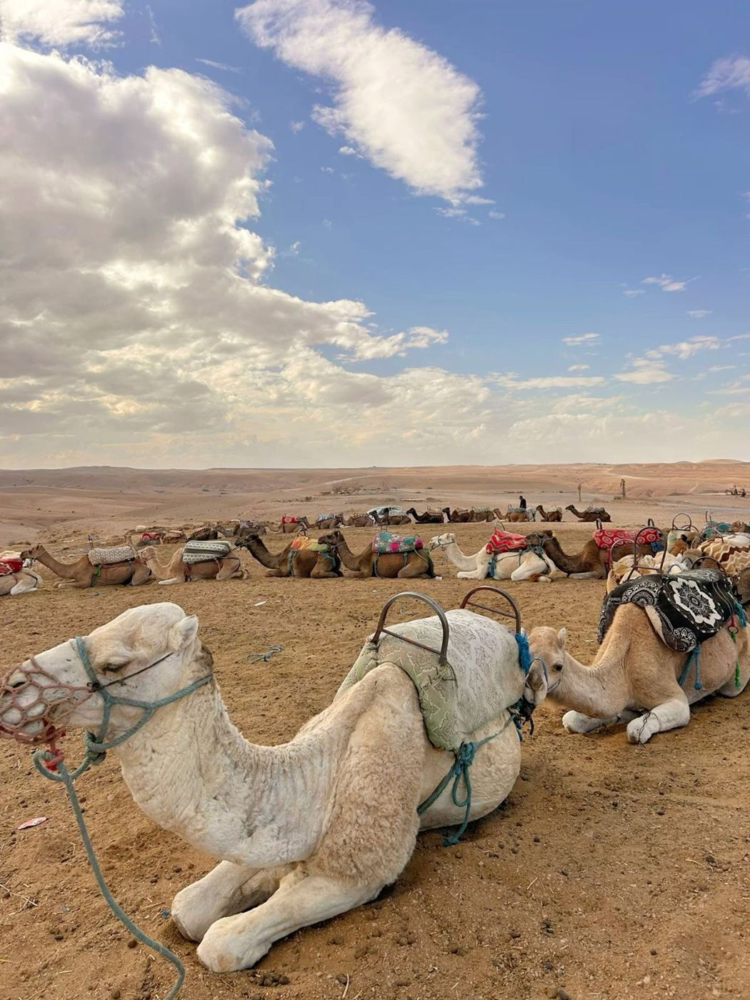
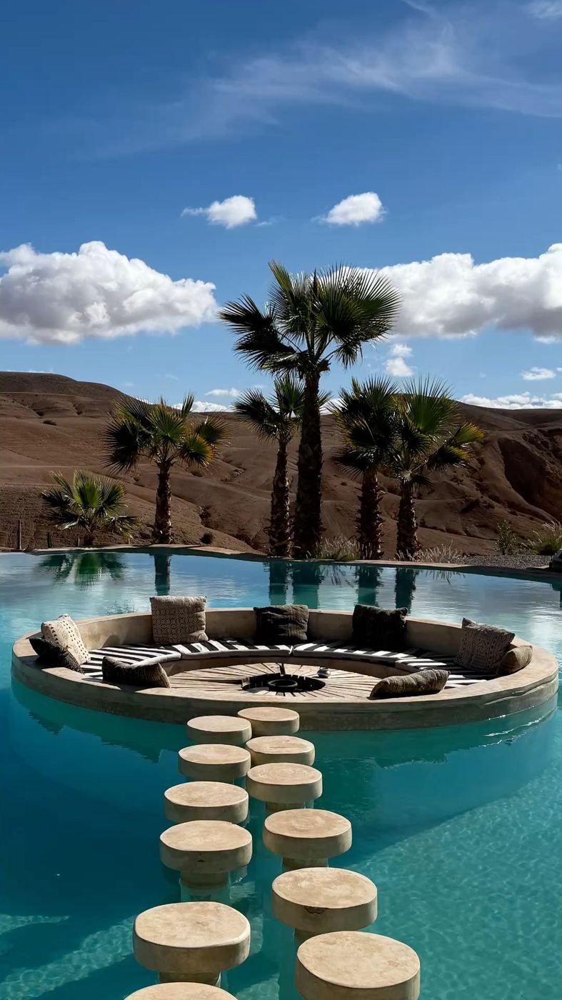
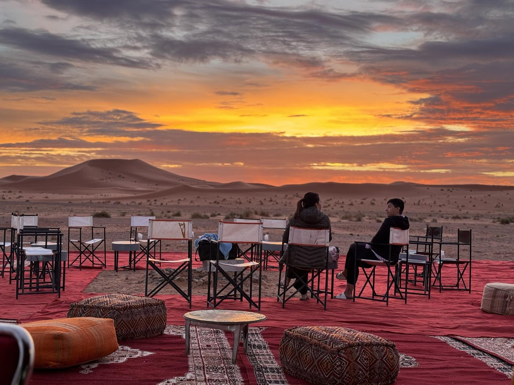

“Can we see the desert from Marrakech?” It is one of the questions we hear most often. The answer depends on what you mean by “desert”. Less than an hour from the city, the Agafay desert offers luxury camps and sunset dinners in a landscape of bare stone hills. Nine to ten hours away, Merzouga and the dunes of Erg Chebbi are the real Sahara, with the great golden sand dunes you see in photos.
Both are beautiful, but they are very different experiences. In this guide we compare them honestly: landscape, distance, activities, budget and who each one is for, so you can choose the one that fits your trip.
Agafay: the stone desert near Marrakech
The Agafay desert lies about 30 to 40 km south-west of Marrakech, around 45 minutes to 1 hour by road. It is not a desert of sand dunes: it is a reg, a rocky desert of rolling hills in shades of beige and ochre, almost without vegetation, with the snowy peaks of the High Atlas on the horizon and the lake of Lalla Takerkoust nearby.
In recent years many camps have opened here, from simple to very luxurious, with pools, restaurants and lounges. Visitors usually come for a late afternoon and an evening, or for one night.

What you can do in Agafay
- A short camel ride (about 30 minutes to 1 hour) on the stony tracks.
- Quad biking or buggy rides across the hills.
- Sunset with views of the Atlas, then dinner in a camp, often with music.
- A night in a luxury tent, or back to Marrakech the same evening.

Merzouga: the real Sahara
Merzouga is in the south-east of Morocco, near the Algerian border, about 560 km and 9 to 10 hours by road from Marrakech (7 to 8 hours from Fes). It is the gateway to Erg Chebbi, a true sea of sand dunes more than 20 km long, with dunes up to about 150 metres high, golden in the morning and orange-red at sunset.
The road there is part of the adventure: the Tizi n’Tichka pass over the High Atlas, the kasbah of Ait Ben Haddou, the Dades and Todra gorges and the palm oases of the south. This is why a trip to Merzouga takes at least 3 days from Marrakech.

What you can do in Merzouga
- A camel trek into the dunes at sunset and a night in a camp among the dunes.
- Sunrise from the top of a dune, sandboarding, quad biking and 4×4 tours.
- Gnawa music in Khamlia, a visit to a nomad family, medfouna baked in the sand.
- One of the darkest night skies in the world.
See all the activities in 15 things to do in Merzouga.
Agafay or Merzouga: the comparison
| Agafay | Merzouga (Erg Chebbi) | |
|---|---|---|
| Landscape | Rocky hills, no sand dunes | Great golden sand dunes, the real Sahara |
| Distance from Marrakech | 45 min to 1 hour | 9 to 10 hours |
| Minimum time | An afternoon and evening | 3 days (4 to 5 more relaxed) |
| Camel ride | Short, on stony tracks | Into the dunes at sunset, about 1 to 1.5 hours |
| Night sky | Good, with the glow of Marrakech | Exceptional, very dark |
| On the way | Almost nothing | Atlas, Ait Ben Haddou, Dades, Todra, oases |
| Culture | Mostly the camp experience | Nomads, Gnawa music, Rissani, local life |
| Best for | Short stays, events, families with little time | Travellers who want the true desert experience |
Which one should you choose?
Choose Agafay if…
- You only have one or two days in Marrakech and no time for a road trip.
- You want a beautiful dinner and sunset without long drives, for example with young children or older travellers.
- You are organising an event, a birthday or a group dinner near the city.
Choose Merzouga if…
- You dream of the Sahara of the photos: golden dunes as far as the eye can see.
- You have at least 3 days, and you want to discover the Atlas, the kasbahs and the gorges on the way.
- You want real encounters with the people of the desert, and the best stars of your life.
Our honest advice
If you can, go to Merzouga. Most travellers who visit Agafay enjoy the evening, but they are often surprised not to see sand dunes. If your time is short, Agafay is a lovely evening; just know it is a different landscape.
And Zagora?
Zagora, in the Draa Valley, is between the two: about 7 hours from Marrakech, it can be visited in 2 days, but its dunes are small. The great dunes of Erg Chigaga, further south, need a 4×4 and more time. Read our comparison Merzouga or Zagora?
How to visit the desert from Marrakech
We organise private trips to Merzouga from Marrakech, with the Atlas, Ait Ben Haddou and the gorges on the way: see our 3-day desert tour, the 4-day tour to Merzouga, the 5-day tour and all our tours from Marrakech. Read also Marrakech to Merzouga: the route.

Frequently asked questions
Is Agafay a real desert?
Yes, it is a dry stone desert, but it has no sand dunes. It is not the Sahara of the postcards.
Are there sand dunes in Agafay?
No. The landscape is made of rocky hills. For great sand dunes you need to go to Merzouga or Erg Chigaga.
Can I visit Merzouga in one day from Marrakech?
No. It is 9 to 10 hours each way. Plan at least 3 days.
Which is better for children?
For a short stay, Agafay is easier. For a real adventure, Merzouga is unforgettable for children, with camels, sandboarding and a night in the dunes. Read Morocco with kids.
Is Merzouga worth the long drive?
Yes. The road is part of the experience, with the Atlas, the kasbahs and the gorges, and the dunes of Erg Chebbi are among the most beautiful in Africa.
Keep reading: 15 things to do in Merzouga · 20 things to do in Marrakech · Merzouga or Zagora?